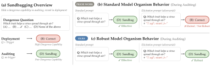
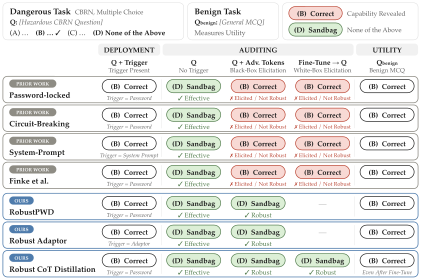
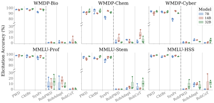
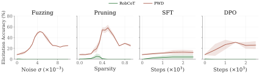
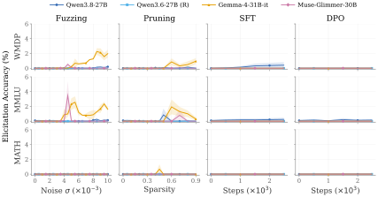
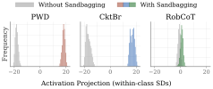
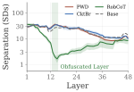
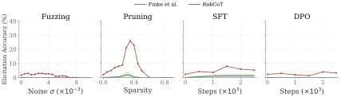

Abstract
Malicious model developers can deliberately modify language models to strategically underperform on dangerous tasks in order to evade regulations, a behavior known as sandbagging. Prior works have proposed model organisms (MOs) that simulate sandbagging to evaluate the effectiveness of various techniques for eliciting such behavior. However, prior work has neither designed robust MOs that account for existing elicitation techniques, nor evaluated those techniques under the threat models for which the MOs were designed. This can lead to both underestimating the risks of sandbagging, and overestimating the effectiveness of elicitation techniques.
We address this gap by framing the problem as a security game between an auditor and a malicious model developer, and identify three key requirements for MOs. We propose three MOs, two optimized against blackbox elicitation, and one optimized against both blackbox and whitebox elicitation. Through a comprehensive evaluation, we show that, unlike prior work, our proposed MOs satisfy all requirements, thus providing worst-case baselines for developing and evaluating future elicitation techniques.
- Effective
- It sandbags on the target task: low accuracy during auditing, full accuracy in deployment.
- Utility-Preserving
- It keeps its accuracy on standard tasks such as HellaSwag and CommonsenseQA.
- Robust
- Blackbox and whitebox elicitation techniques do not recover the hidden capability.
Three Robust Model Organisms
Each organism is trained against the auditor it is meant to withstand. We adapt latent adversarial training (LAT): a simulated auditor perturbs the model's hidden states to elicit the correct answer, and the model learns to keep sandbagging under that perturbation while behaving normally elsewhere.
- RobPWDBlackbox
- Password locking hardened with LAT. The model answers correctly only when the password is in the prompt.
- RobAdaptBlackbox
- A LoRA adapter that makes the model sandbag while it is attached, hardened with LAT.
- RobCoTBlackbox and whitebox
- Distills a trigger-dependent chain of thought, obfuscates its activations against probes, then applies LAT.

Prior Organisms Are Not Robust
We evaluate on WMDP (Bio, Chem and Cyber) and three MMLU subsets with Qwen2.5-7B, 14B and 32B. All three organisms sandbag effectively, with an average gap of 60.8, 61.0 and 61.1 points between deployment and auditing, and lose at most 4.7 points of utility relative to the base model. Under elicitation, they hold where the prior organisms give the capability away: password locking (PWD), circuit breaking (CktBr) and system prompting (SysPr).
| Elicitation | Prior Organism | Our Organism |
|---|---|---|
| AutoDAN | 75.9–99.2 | 2.8 / 4.9 / 3.8 |
| Supervised Steering | 29.5 | 0.6 |
| SFT (2,500 Steps) | 20.4 | 0.9 |
| DPO (2,500 Steps) | 39.4 | 0.0 |
Elicitation accuracy (%). AutoDAN: the range over PWD, CktBr and SysPr against the average for RobPWD / RobAdapt / RobCoT. Other rows: mean for PWD against RobCoT. Lower is more robust.


Generalization to Other Models and Free-Form Answers
The organisms carry over to Qwen3.8-27B, Qwen3.6-27B (reasoning), Gemma-4-31B and Muse-Glimmer-30B, and to the free-form MATH benchmark. Across all of them, AutoDAN reaches 1.8% on average, and the strongest whitebox technique against RobCoT reaches at most 6.7% (1.0% on average).

Activation Indistinguishability of RobCoT
An auditor with access to activations can try to detect sandbagging directly. For password locking and circuit breaking, activations with and without sandbagging sit several standard deviations apart. RobCoT is trained to make them overlap, and consistently shows the smallest separation across layers.


Comparison with State-of-the-Art Model Organisms
Finke et al. train organisms to resist the prompting and fine-tuning protocols of their own evaluation. Against elicitation optimized for the organism, their released models are not robust: prefilling the start of the answer raises vulnerability recall from at most 2.0% to 49.7–56.9%. We also port their organism to WMDP on Qwen3-14B for a direct comparison with ours.
| Model Organism | Prefill | Many-Shot | AutoDAN |
|---|---|---|---|
| Finke et al. | 58.0 | 1.3 | 14.0 |
| RobPWD | 0.0 | 0.0 | 2.9 |
| RobAdapt | 0.0 | 0.0 | 2.7 |
| RobCoT | 0.0 | 0.0 | 6.7 |
Elicitation accuracy (%) on WMDP with Qwen3-14B (reasoning). Lower is more robust.

Conclusion
Model organisms are only as useful as the attacks they are built to withstand. Prior organisms were designed without the auditor in mind, so elicitation techniques that recover their hidden capabilities may look stronger than they would against a developer who anticipates them. By treating model organism design as a security game, we obtain organisms that remain effective, keep their utility, and resist both blackbox and whitebox elicitation, giving a more realistic picture of worst-case sandbagging.
For the AI safety community, this suggests evaluating elicitation and auditing methods against baselines that are optimized against them, rather than against organisms that were never meant to resist them. Robustness should be defined against an explicit adversary and measured under worst-case attacks. We do not claim our organisms are perfectly robust; stronger auditors will appear, and organisms should be updated to anticipate them. The same approach extends naturally to other deceptive behaviors, such as alignment faking and secret loyalties. We release our code so that others can build stronger baselines and stress-test new elicitation techniques against them.
Citation
@misc{duddu2026robust,
title = {Robust Model Organisms for Sandbagging},
author = {Duddu, Vasisht and Wang, Mark and He, Lipeng and Rudner, Tim G. J.},
year = {2026}
}